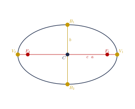
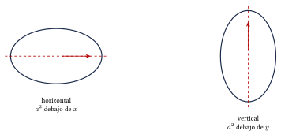
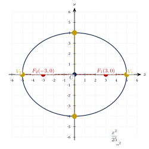
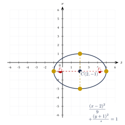

Capítulo 35
Elipse
UNAM IPN
La elipse es una sección cónica definida mediante dos focos. Para resolver ejercicios es importante identificar el centro, la orientación del eje mayor y los valores de \(a\), \(b\) y \(c\).
En este capítulo estudiarás sus formas ordinarias, sus elementos principales y la transformación de la forma general mediante el método de completar cuadrados.
35.1 Definición y elementos#
La elipse es el conjunto de puntos del plano cuya suma de distancias a dos puntos fijos, llamados focos, es constante.
Si \(P\) pertenece a la elipse, entonces:
Los elementos principales de una elipse son:
- Centro \(C\): punto medio entre los focos.
- Vértices \(V_1\) y \(V_2\): extremos del eje mayor.
- Co-vértices \(B_1\) y \(B_2\): extremos del eje menor.
- Focos \(F_1\) y \(F_2\): puntos fijos de la elipse.
- Semieje mayor \(a\): distancia del centro a un vértice.
- Semieje menor \(b\): distancia del centro a un co-vértice.
- Semidistancia focal \(c\): distancia del centro a un foco.
- Excentricidad \(e\): medida de qué tan alargada es la elipse.
Las longitudes de los ejes son:
y:
En toda elipse se cumple:
o, equivalentemente:
Además:
y:
La excentricidad de una elipse es:
En toda elipse:
Una elipse con excentricidad cercana a cero es casi circular.
Una elipse con excentricidad cercana a uno es más alargada.
La longitud de cada lado recto de una elipse es:
Los elementos principales de una elipse horizontal se muestran en la siguiente figura:

35.2 Formas ordinarias#
35.2.1 Elipse horizontal#
con:
Sus elementos son:
35.2.2 Elipse vertical#
con:
Sus elementos son:
El denominador mayor siempre es:
Su posición determina la orientación de la elipse:
- si \(a^2\) está debajo del término con \(x\), la elipse es horizontal;
- si \(a^2\) está debajo del término con \(y\), la elipse es vertical.
No se determina la orientación observando cuál variable aparece primero.
La orientación depende exclusivamente de la ubicación del denominador mayor.

35.3 Centro en el origen#
Cuando:
las ecuaciones se simplifican.
35.3.1 Horizontal#
35.3.2 Vertical#
Encuentra la ecuación de la elipse con vértices:
y focos:
Ver solución
La elipse es horizontal y su centro es:
De los vértices:
De los focos:
Aplicamos:
Entonces:
Por tanto:

Encuentra los elementos principales de:
Ver solución
El denominador mayor está debajo de \(x\), por lo que la elipse es horizontal.
Calculamos:
Por tanto:
El centro es:
Los vértices son:
Los co-vértices son:
Los focos son:
La excentricidad es:
La longitud del lado recto es:
Encuentra la ecuación de la elipse con vértices:
y focos:
Ver solución
La elipse es vertical.
Calculamos:
Por tanto:
35.4 Centro fuera del origen#
Encuentra los elementos de:
Ver solución
El centro es:
El denominador mayor está debajo del término con \(x\), por lo que la elipse es horizontal.
Calculamos:
Los vértices son:
Los co-vértices son:
Los focos son:
La excentricidad es:

35.5 De la forma general a la ordinaria#
Una elipse no rotada puede aparecer en la forma:
Los coeficientes \(A\) y \(C\) deben tener el mismo signo.
Para obtener la forma ordinaria se completan cuadrados.
Transforma:
a la forma ordinaria.
Ver solución
Agrupamos:
Factorizamos:
Completamos cuadrados:
Factorizamos:
Dividimos entre \(36\):
Por tanto:
La elipse es horizontal.
Los vértices son:
Los focos son:

35.6 Procedimiento rápido#
- Escribe la ecuación en forma ordinaria.
- Identifica el centro: \[C(h,k).\]
- Localiza el denominador mayor: \[a^2.\]
- Determina la orientación.
- Calcula: \[a=\sqrt{a^2} \qquad\text{y}\qquad b=\sqrt{b^2}.\]
- Calcula: \[c=\sqrt{a^2-b^2}.\]
- Encuentra vértices, co-vértices y focos.
- Calcula, si se solicita: \[e=\frac{c}{a}\] y: \[|LR|=\frac{2b^2}{a}.\]
35.7 Resumen#
35.8 Errores frecuentes#
Recuerda:
- El denominador mayor es \(a^2\).
- El eje mayor se encuentra debajo de la variable cuyo denominador es \(a^2\).
- Siempre: \[a>b.\]
- La relación correcta es: \[c^2=a^2-b^2.\]
- El centro se obtiene cambiando los signos dentro de los paréntesis.
- Los focos siempre pertenecen al eje mayor.
- Los co-vértices pertenecen al eje menor.
- No debe confundirse la distancia focal \(2c\) con la semidistancia focal \(c\).
35.9 Ejercicios propuestos#
Encuentra la ecuación de la elipse con vértices:
y focos:
Ver solución
Elipse horizontal con centro en \(C(0,0)\), \(a = 4\) y \(c = 2\): \[b^2 = a^2 - c^2 = 16 - 4 = 12.\] Ecuación: \[\frac{x^2}{16} + \frac{y^2}{12} = 1.\]
Encuentra la ecuación de la elipse con vértices:
y focos:
Ver solución
Elipse vertical con centro en \(C(0,0)\), \(a = 5\) y \(c = 3\): \[b^2 = a^2 - c^2 = 25 - 9 = 16.\] Ecuación: \[\frac{x^2}{16} + \frac{y^2}{25} = 1.\]
Encuentra el centro, los vértices, los co-vértices, los focos y la excentricidad de:
Ver solución
Elipse horizontal con \(C(0,0)\), \(a^2 = 36 \Rightarrow a = 6\); \(b^2 = 16 \Rightarrow b = 4\). \[c^2 = 36 - 16 = 20 \Longrightarrow c = \sqrt{20} = 2\sqrt{5}.\] Vértices: \(V_1(6, 0)\), \(V_2(-6, 0)\). Co-vértices: \(B_1(0, 4)\), \(B_2(0, -4)\). Focos: \(F_1(2\sqrt{5}, 0)\), \(F_2(-2\sqrt{5}, 0)\). Excentricidad: \[e = \frac{c}{a} = \frac{2\sqrt{5}}{6} = \frac{\sqrt{5}}{3}.\]
Encuentra los elementos principales de:
Ver solución
Elipse horizontal con centro en \(C(2, -1)\). \(a^2 = 25 \Rightarrow a = 5\), \(b^2 = 16 \Rightarrow b = 4\). \[c^2 = 25 - 16 = 9 \Longrightarrow c = 3.\] Vértices: \(V_1(7, -1)\), \(V_2(-3, -1)\). Co-vértices: \(B_1(2, 3)\), \(B_2(2, -5)\). Focos: \(F_1(5, -1)\), \(F_2(-1, -1)\). Excentricidad \(e = 3/5\).
Encuentra los elementos principales de:
Ver solución
Elipse vertical con centro en \(C(-3, 2)\). \(a^2 = 25 \Rightarrow a = 5\), \(b^2 = 9 \Rightarrow b = 3\). \[c^2 = 25 - 9 = 16 \Longrightarrow c = 4.\] Vértices: \(V_1(-3, 7)\), \(V_2(-3, -3)\). Co-vértices: \(B_1(0, 2)\), \(B_2(-6, 2)\). Focos: \(F_1(-3, 6)\), \(F_2(-3, -2)\). Excentricidad \(e = 4/5\).
Transforma a la forma ordinaria y determina el centro, los vértices y los focos:
Ver solución
Agrupamos y completamos TCP: \[9(x^2 - 2x) + 4(y^2 + 4y) = 11.\] \[9(x^2 - 2x + 1) + 4(y^2 + 4y + 4) = 11 + 9 + 16 = 36.\] \[9(x - 1)^2 + 4(y + 2)^2 = 36.\] \[\frac{(x - 1)^2}{4} + \frac{(y + 2)^2}{9} = 1.\] Es una elipse vertical con centro \(C(1, -2)\), \(a = 3\), \(b = 2\), \(c = \sqrt{9 - 4} = \sqrt{5}\). Vértices: \((1, 1)\), \((1, -5)\). Focos: \((1, -2 + \sqrt{5})\), \((1, -2 - \sqrt{5})\).
Determina si la ecuación representa una elipse real. Si es así, encuentra su centro y sus semiejes:
Ver solución
Agrupamos y completamos TCP: \[(x^2 + 2x) + 4(y^2 - 2y) = -1.\] \[(x^2 + 2x + 1) + 4(y^2 - 2y + 1) = -1 + 1 + 4 = 4.\] \[(x + 1)^2 + 4(y - 1)^2 = 4.\] \[\frac{(x + 1)^2}{4} + \frac{(y - 1)^2}{1} = 1.\] Sí es una elipse real, de tipo horizontal, con centro en \(C(-1, 1)\). Semiejes: \(a = 2\), \(b = 1\).